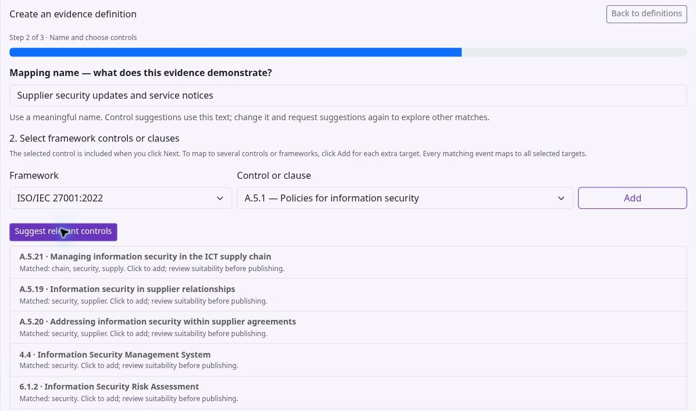

Using KEEN
Build and preview evidence mappings
Chapter 4 of 15
Mapping made simple
A mapping rule tells KEEN: “When an event looks like this, link it to these controls.” Begin with an event you can see in KEEN. Its fields tell you which words to put in the rule.
| Question | KEEN field | Example recorded value |
|---|---|---|
| Where did it come from? | Source | jenkins |
| Which service or server? | System | prod |
| What happened? | Action / activity | build |
| What was the result? | Outcome / result | success |
| Who did it? | Actor | An account name, when provided |
Action is the activity name already written on the event. Filling the Action field in a rule asks KEEN to find that activity. Outcome is the result already written on the event. Filling it asks KEEN to find that result.
- Open Admin → Sources & Evidence Mapping → New mapping. Describe what the evidence demonstrates, such as “Production build checks completed successfully.”
- Select the source and, if relevant, its specific job, query, feed or page. Choose a recent event.
- Click Copy its match values. KEEN fills the system, activity and result from the event. Remove any value you want to allow to vary.
- Read the sentence below the fields. For this example it should select Jenkins events with activity
buildand resultsuccess; set systemprodonly if that is the event’s recorded system. - Select the controls or clauses this evidence supports. A matching event can link to several controls and frameworks.
- Preview matches. Inspect both matching events and the explanations for events that did not match. Publish when those examples reflect your intention.
An empty optional field means any value is allowed. Every filled condition must match: action build plus outcome success requires both. Exact text is case-sensitive: Build and build are different values. Severity is an exact number, so 4 means severity 4.
The suggested values come from recent evidence. They are examples of values observed for that source, and may not include every historical value. With no recent evidence, collect a sample first. The advanced “Predefine” option is available when you already know the values your source will produce.
| Source | Typical activity | Result to expect | What to check |
|---|---|---|---|
| Jenkins | build, or the configured job kind | success, failed, info | FAILURE, ABORTED and UNSTABLE become failed. |
| RSS | published or updated | info | A published item is information; evaluate its relevance to the control. |
| KEEN Agent | package.upgrade, auditd.SYSCALL, http.request | Depends on the parser: info, success or failure | A package log may report an action without claiming success. Inspect the actual event. |
| Loki / CloudWatch | The collection’s configured activity | The collection’s configured result | The query must select records that justify those assigned values. |
| Guided API integration | A mapped API field or configured constant | A mapped result, optionally translated | Preview the normalized event before creating its mapping rule. |
Keep the exact word supplied by the source: Jenkins failed and agent failure are different values. info means an informational record without a success/failure claim. A blank Outcome rule can be useful for linking all maintenance activity, including records that need further review.
Collection and mapping are two steps. Collection settings define which records enter KEEN and the fields they receive. Mapping conditions read those fields and choose where to link the evidence. Change an integration’s field extraction in its integration editor; change its control links in Sources & Evidence Mapping.
Mapping records a relationship between evidence and a control. Assess relevance, time period, scope and quality when judging the requirement. A failed check can itself be useful evidence of monitoring or incident handling, with its failed result clearly retained.

Diagram source (Mermaid)
flowchart TB
E["Jenkins records a build"] --> A{"Activity equals build?"}
A -->|Yes| O{"Result equals success?"}
A -->|No| K["Keep the event without this rule's mapping"]
O -->|No| K
O -->|Yes| M["Link evidence to the selected controls"]
M --> R["Review evidence and assess the requirement"]
K --> X["Other rules can still match"]
Configure collection and mapping with evidence definitions

Administrators use Admin → Sources & Evidence Mapping. The Source catalogue shows supported adapters and their availability. An evidence definition combines a source input, the events that qualify as evidence, and the framework controls or clauses they support. One input can support several definitions, and one event can support several frameworks.
Choose Create evidence definition to open the four-step editor.
- Describe the evidence. Explain what the collected evidence demonstrates, such as successful production deployments following the change process.
- Collect and recognise. Select the source adapter and input type. Choose an existing query, job, feed or page, or create a collection item. All events from this source is suitable for a deliberately source-wide definition. Inspect a Recent event with Use this event, then narrow the definition using event fields if needed.
- Select framework controls or clauses. Select a framework and target. Use Add for each extra target, including targets in other frameworks. The selected target is also included when you choose Next. Check the complete list.
- Preview and save. Choose Preview matches and inspect both matches and nonmatches. Set the confidence and enabled state under Advanced rule settings, then Save rule.
Every filled matching field must match. Prefer source, system, actor, action, outcome, severity or label values that you can see on real events. Use regex only where exact values cannot express the intended match. A successful preview shows how the rule applies to the sampled events. Review new events as collection continues.
The description-based control suggestions are candidates to review. Decide which requirements each candidate genuinely supports. Confidence is the rule author’s mapping confidence between 0 and 1, with compliance assessed through evidence and review.
Collection settings and credentials
A Jenkins job’s kind determines its event action; its label determines the event system. For Loki, configure the query and its normalised event fields. For BookStack, select a book and then a page, grouped by chapter; use the additional page-loading buttons when needed. The picker uses the server’s configured credentials.
Additional collection settings accepts connector-specific JSON options inside the editor. Shared adapter settings contains advanced settings common to an adapter. Connection credentials and adapter enablement remain server settings: ask the hosting operator or systems administrator to configure them. Never paste tokens or passwords into descriptions, matching fields or shared JSON settings.
Definitions before events arrive
Select Predefine this rule before evidence is available when there is no sample to preview. Check the first real events as soon as collection runs, preview the definition against them and correct any assumptions about field values or collection identity.
Build and verify an evidence definition
An adapter connects to a service. A collection item identifies an input such as a query, job, feed, project or page. An evidence definition describes which events from that input support which controls or clauses. Reuse collection items when several definitions need the same input.
- Open Admin → Sources & Evidence Mapping → Create evidence definition. Describe the assurance claim: for example, “Successful production deployments recorded by the approved deployment job.”
- In Collect and recognise, select the adapter and input type. Choose the existing collection item or create one. Avoid “All events from this source” unless every input from that adapter genuinely belongs to the definition.
- Use Recent event → Use this event to inspect actual normalised fields. For a Jenkins input, the job kind supplies the action and the label supplies the system. Use the exact field values on the event, including distinctions such as “deploy” and “deployment”.
- Fill the relevant source, system, actor, action, outcome, severity or label conditions. Every filled condition must match. Start with exact values. Advanced regex is for patterns that exact fields cannot express.
- Select each target framework, control or clause and add it to the target list. Check references and the complete list before proceeding. Description-based suggestions need review.
- Preview both a positive sample and an event that should not qualify. Check that another collection item, a failed outcome or an unrelated environment does not qualify accidentally.
- Review enabled state, mapping confidence and whether to apply the rule to existing evidence. Save and monitor any background job separately from the successful configuration save.
Example: if the inspected event says system “production-api”, action “deployment” and outcome “success”, these three conditions restrict the definition to successful deployments of that system. A failed deployment may deserve a separate definition or incident investigation. Do not reuse the success mapping simply because both events came from Jenkins.
Additional collection settings contains advanced per-item JSON. Shared adapter settings applies common adapter options. Neither is a secret store. Connection credentials and enablement remain server configuration. BookStack collection uses the configured server credentials to browse books and pages; select the intended page and verify the captured material.
Historical evidence and changing rules
Use Predefine this rule before evidence is available only when no sample exists, then inspect the first real events. Preview checks the selected sample; review new events as collection continues. Confidence is the author's confidence in the mapping, between 0 and 1. Review compliance through the supporting evidence and assessment.
Apply saved rule to past evidence evaluates existing events in a background job. Admin → Sources & Evidence Mapping → Review historical remapping supports a wider operation with source and time filters. Its normal mode finds unmapped events; Include already-mapped events permits additive mappings. Begin with a bounded range and inspect results.
When you narrow or remove a definition, review old automatic mappings separately. Review one batch of at most 500 and remove only the reviewed stale mappings. Manual and imported mappings are preserved by this operation. Restoring a previous rule set restores configuration; historical evidence relationships require a separate review. On a version conflict, reload the latest version and reconcile your changes.
Apply rules to existing evidence
Apply this rule to previously collected evidence in the background is selected by default in the rule editor. Review it before saving. The application creates a background job; completion is separate from saving the definition. You can also use Apply saved rule to past evidence and inspect the reported job status.
After tightening or deleting a rule, old automatic mappings may need review. Under Review old rule mappings after changing a rule, select a source and review a batch of at most 500. Inspect the result before choosing Remove reviewed stale mappings. This action considers automatic rule mappings; manual and imported mappings are preserved.
Admin → Remap provides a broader operation with dates, limit, source, system, action and outcome filters. By default it processes events with no mappings. Include already-mapped events adds new rule-based mappings to events already linked elsewhere. Adding mappings is different from removing stale ones.
If another administrator has saved a newer configuration, reload and reconcile your changes. Do not repeatedly overwrite a version conflict. Restore this rule’s revision is available for a saved rule. History starts at revision 1 for that rule and ignores edits to other rules. Restoring changes only the selected rule, preserves other rules and collection settings, and does not remap historical evidence. Revisions represent recorded database history; earlier YAML-only edits are not recorded.
Create a mapping from an event
- Open an individual event and choose Create mapping from this event.
- Review the suggested matching conditions. Field names follow the event JSON, including structured keys such as
fields → process.name,fields → host.name,fields → statusandfields → log.file.path. Use the fields actually present in that event. - Remove conditions that are too specific for your intended evidence. A host or IP condition restricts the rule to that host or address. Event identifiers and timestamps identify individual records and usually do not belong in a reusable rule.
- On the control-selection step, set a meaningful mapping name and choose the framework controls or clauses. The suggestion button uses the name to help find relevant controls; refine the name and try it again if needed.
- Review and save. Use the existing-mapping browser to search, edit or delete rules. Use the available historical-application action when you also want to map evidence already collected.
A mapping attributes matching evidence to framework requirements. Collection inputs determine which remote data KEEN fetches. A rule alone does not configure a remote collection.